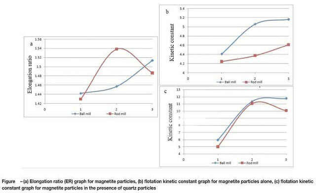

Ball Mill Overview
Ball mill is a common grinding machine. It is also the key equipment in grinding industry. Ball mill is suitable for grinding various materials with different hardness and humidity. That's because it has two kind of grinding modes, dry process and wet process. Customers can control the capacity and final products' fineness by adjusting the diameter of the ball. The final products can be adjusted between 0.074mm to 0.4mm according to customers' requirement.
Improve The Crushing Rate Of Ball Mill
Considering from the grinding media, another method to achieve energy saving and consumption reducing is to accurate the diameter of steel balls, and make the steel balls with proper proportion and make the grinding media has proper shape. When the load is fixed, if the diameters of steel balls are too big, numbers of steel balls are very small, and then the collision probability between steel balls and ore particles will reduce. Also the grinding efficiency of ball mill will reduce.
If the steel balls are too small, even the collision probability is relatively high, but the energy of single steel ball is very small, which cannot efficiently grind the ore particles, also leading to the reduction of grinding efficiency. But when the steel balls with accurate diameters, the crushing power is also accurate, and then there will be more efficient grinding process. In this case, the grinding efficiency will greatly increase. So in the ball mill grinding process, we need steel balls with accurate diameter and proper proportion and shape.